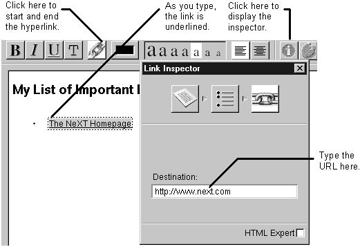

Table of Contents
Table of Contents
 Previous Section
Previous Section
Table of Contents
Previous Section
There are two types of hyperlinks that you might use in a WebObjects application. The first is a static hyperlink, whose contents and destination file never change. The second is a dynamic hyperlink (WOHyperlink). To create a dynamic hyperlink see "Creating Dynamic Hyperlinks."
To create a static hyperlink:
Click the link button.
Type the text that the hyperlink should contain. As you type, the text is underlined.
Click the link button again.
While the hyperlink element is selected, set its destination in the inspector window.

You can also create this type of link by dragging the hyperlink from the Static Elements palette (See "Using the Static Elements Palette.") or by selecting text and then clicking the link button.
 Next Section
Next Section